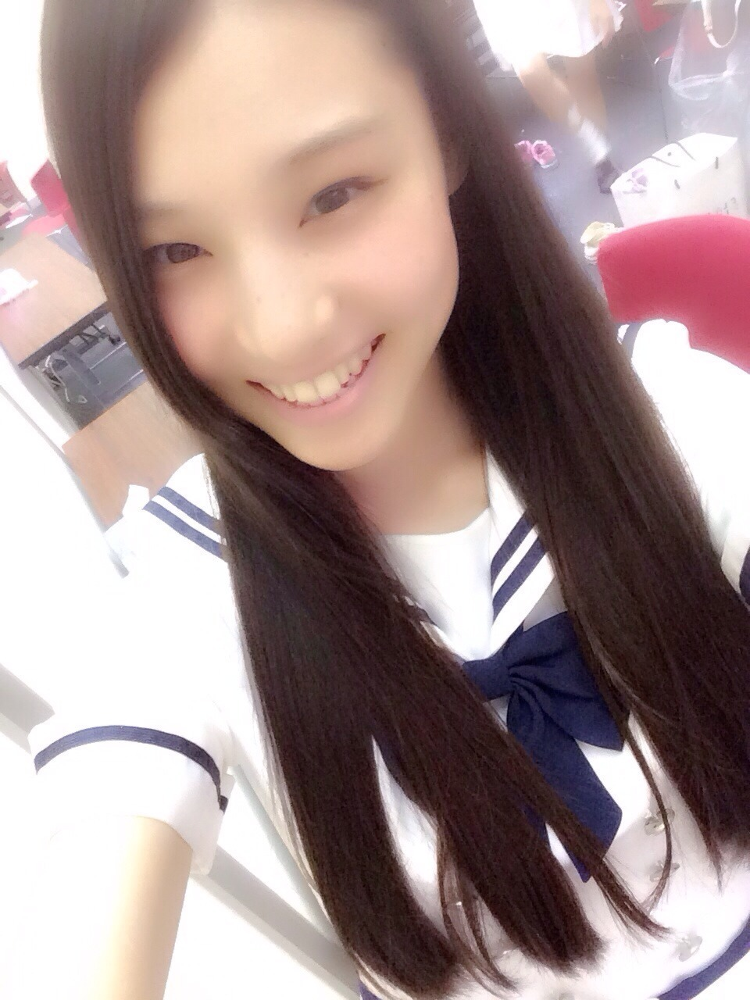
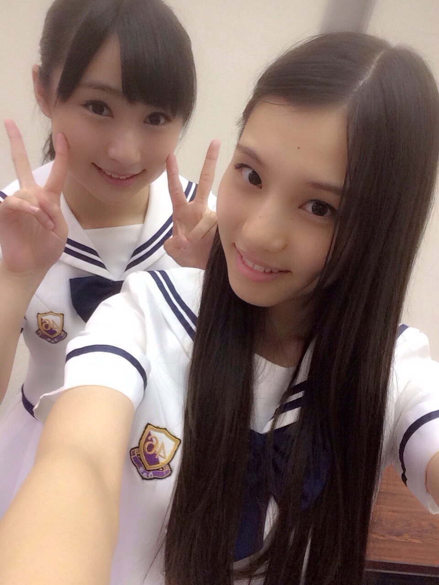
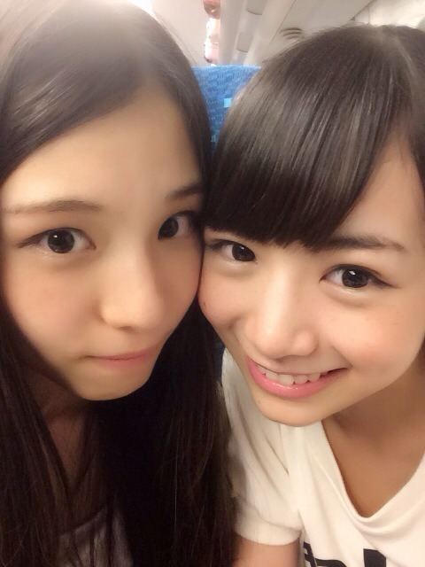

| 2014/08 16 Sat | 最近、腕かまれる_(．．*)vol.2 |
みなさんこんばんわ！
高校2年生16歳
さがらいおりです

今日は真夏の全国ツアー初日！
大阪市中央体育館で
昼夜の２公演を行いました♪♪
乃木坂に復帰してからまだ間もないのに
こんな大きなステージに
立たせていただけて
本当に幸せです♪♪
まだたくさんの公演が
残っているので、
今日のパフォーマンスを
こえられるように
次のライブまでに
もっとダンス頑張ります！！
今日の夜公演の最後のMCで
松村さんの"さゆりんごパンチ"を
いおりんごパンチで
やらせていただけました(´,,•ω•,,)♡
ありがとうございました！
そして前回のブログたくさんの
コメントありがとうございます♪♪

1000件を越えるコメント数が
来てて嬉しかったです：）
これからもよろしくお願いします！
同じ誕生日って方が何人かいて
ビックリでした！！
質問もたくさんあったので
その中で多かった質問を
自己紹介Part2として答えます(^-^)/
 サイリウムの色
サイリウムの色
黄緑とオレンジ！
今日かりんブログにも
書いてもらったんですけど
今日までにお伝えできなくて
すみませんでした(>_<)
好きな色は
ピンクと薄紫！！
仲いいメンバーは??
やっぱり
ひなこ♡

可愛いくって大好き♡
乃木坂46の推しメン
秋元真夏さん！！
2期生はかりん〜♡
最近は蘭世がきてる(*´∇`)ﾉ
こんな感じです！
また次のブログで
質問答えます！
昨日の夜に
乃木ここ 後半編が
アップされたので、見てみてください！
AKB新聞も15日に
発売されてまーす♪♪
い お り
コメント(378)
2014/08/16 21:36